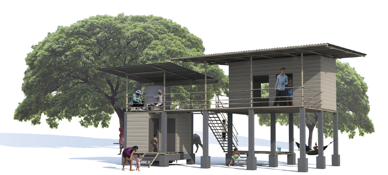
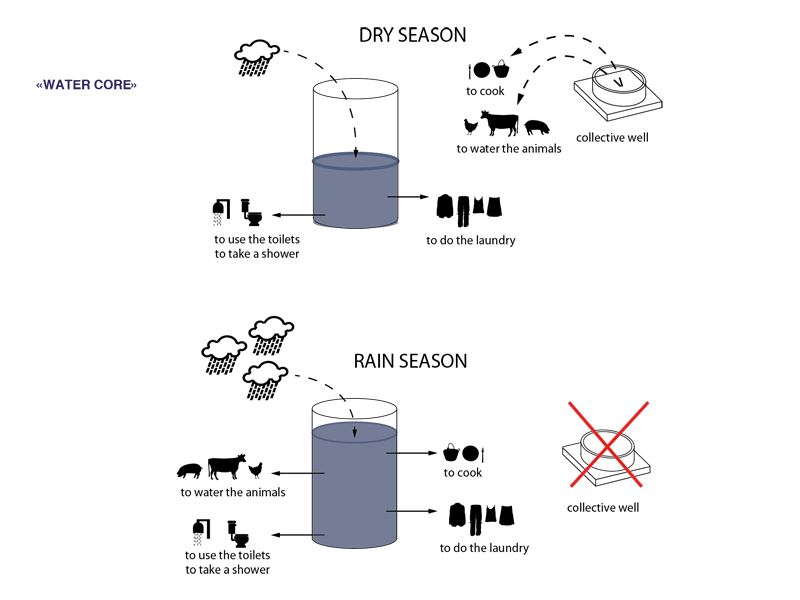
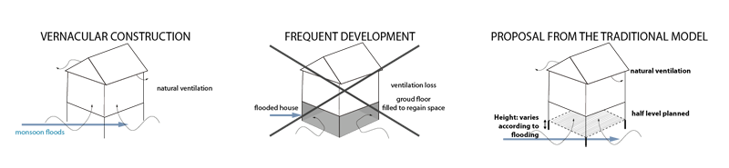
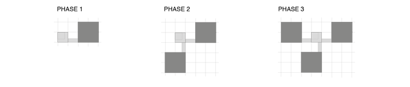
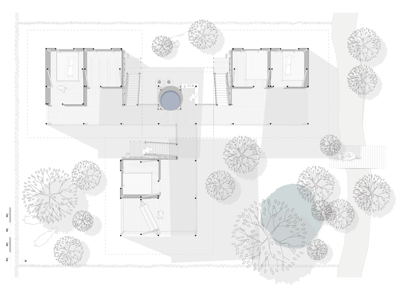
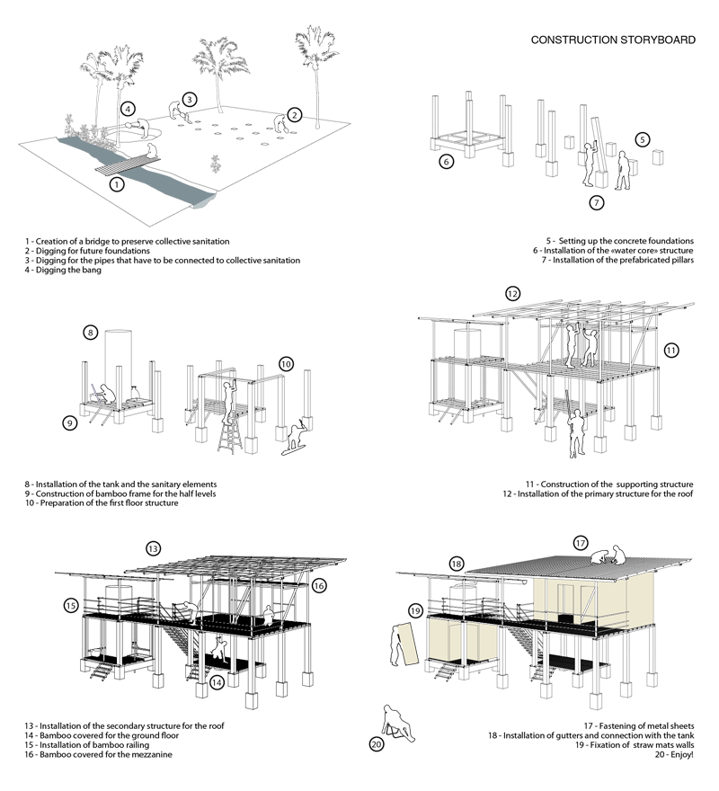
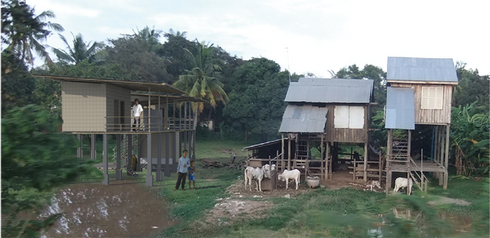
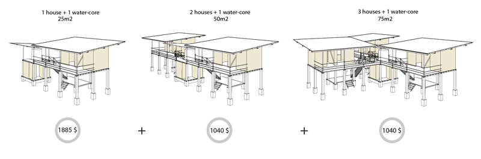
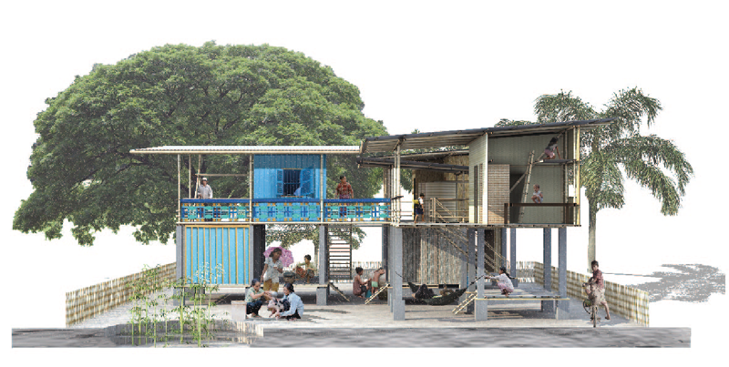

La prise de position du concepteur sur la réalisation pose la question de savoir où s'arrêter. Beaucoup parte du principe que "l'objet" construit est synonyme d'oeuvre, blablablablalballabl albalbalblablalblablablalbl ablalbalblal blablalbalblab lalblablalbalbl alalbalbalalbalbblabl ablablalballablalbalbalblabla lblabla blalblabla lbalblalb lablalbalbl ablalblablalbalblalalb albalalbalbbl ablabl ablalballa blalbalbalblablalblabl ablalblab lalbalblalblablalbalb lablalblablal balblalalbalbala lbalbblablablablal ballablalbalbalblabla lblablablalb lablalbalb lalb lablalbalbla blalblablalbalbl alalbalbala lbalbblablablablalballablalbalba lblablalblabla blalblablalbalblalblab lalbalbl ablalblablalbalbla lalbalb alalbalbblabla blablalballa blalbal balbl ablalbla blablalbl ablalb alblalblablalbalblabl
Le concours tente d'apporter une vision constructible d'une architecture raisonnée pour qu'elle puisse être totalement appropriée par l'habitant, tant dans ses espaces que dans son système constructif. En ceci, nous partons du principe que la construction de l'environnement habité n'est en rien un oeuvre plausible.

La construction traditionnelle cambodgienne présente une intelligence particulière dans sa faculté d’adaptation au climat cambodgien chaud et humide. Malheureusement les principes simples et ancestraux disparaissent face à la modernité, éradiquant les procédés de bon sens pour un langage architectural technique (air conditionné, béton précontraint, sanitaires européens).
Ces nouveaux éléments ne sont généralement pas adaptés au climat et sont en contradiction avec une bonne utilisation des ressources (matière première, matériaux, énergie, pollution, consommation).
Pour ce faire, le projet tend à reprendre les préceptes vernaculaires des maisons traditionnelles. La maison adopte un schéma sur pilotis, permettant non seulement de doubler la surface de la maison, mais également de proposer des espaces ombrés durant la journée.
Une attention particulière est portée à la création d’ombres grâce aux recouvrements des toitures. Ces recouvrements permettent des espaces de vie ombrés entre le sol et l’étage.
Ce principe est fondamental dans la construction traditionnelle et permet de surcroit la ventilation naturelle de la maison (de bas en haut) par le passage du vent entre les lattes du plancher.
L’expérience nous a montré que les surfaces sous pilotis sont en général cloisonnées, afin de récupérer de la surface au sol close, pour y développer de nouveaux espaces de vie ou de commerce. Cette évolution évince le système de ventilation naturelle.
Au Cambodge, l’approvisionnement et l’assainissement sont deux problématiques importantes à prendre en compte dans les futurs développements urbains.
Ainsi, malgré la petite échelle du projet, l’intégration de la problématique de l’eau permet de redéfinir et d’organiser la maison en fonction de cet usage.
L’approvisionnement en eau (cuisine, besoins sanitaires, besoins ménagers) utilisera principalement la récupération d’eau de pluie pour minimiser au maximum le pompage dans les nappes phréatiques (problème actuel). L’intégration des sanitaires dans la maison nous a poussés à rassembler dans un noyau humide les différentes fonctions liées à l’eau, afin que chaque usage soit rattaché à une cuve qui recevrait les eaux de pluie.

Partir de l’usage : L’idée forte de notre projet est d’envisager cette maison comme faisant partie d’un tout. En effet celle-ci peut être associée à une ou deux maisons permettant ainsi une mise en commun du noyau humide et donc une diminution des coûts. Au-delà de cet avantage financier évident, ce regroupement permet d’envisager une densité intéressante, entre intimité et urbanité.

L’idée est donc bien de penser l’association de plusieurs maisons entre elle, plutôt qu’une maison isolée.

StoryBoard constructif : l'appropriation du système constructif.
alalbalbalalbalbblabl ablablalballablalbalbalblabla lblabla blalblabla lbalblalb lablalbalbl ablalblablalbalblalalb albalalbalbbl ablabl ablalballa blalbalbalblablalblabl ablalblab lalbalblalblablalbalb lablalblablal balblalalbalbala lbalbblablablablal ballablalbalbalblabla lblablablalb lablalbalb lalb lablalbalbla blalblablalbalbl alalbalbala lbalbblablablablalballablalbalba lblablalblabla blalblablalbalblalblab lalbalbl ablalblablalbalbla lalbalb alalbalbblabla blablalballa blalbal balbl ablalbla blablalbl ablalb alblalblablalbalblabl

Evolution dans le temps, économy du système
alalbalbalalbalbblabl ablablalballablalbalbalblabla lblabla blalblabla lbalblalb lablalbalbl ablalblablalbalblalalb albalalbalbbl ablabl ablalballa blalbalbalblablalblabl ablalblab lalbalblalblablalbalb lablalblablal balblalalbalbala lbalbblablablablal ballablalbalbalblabla lblablablalb lablalbalb lalb lablalbalbla blalblablalbalbl alalbalbala lbalbblablablablalballablalbalba lblablalblabla blalblablalbalblalblab lalbalbl ablalblablalbalbla lalbalb alalbalbblabla blablalballa blalbal balbl ablalbla blablalbl ablalb alblalblablalbalblabl


